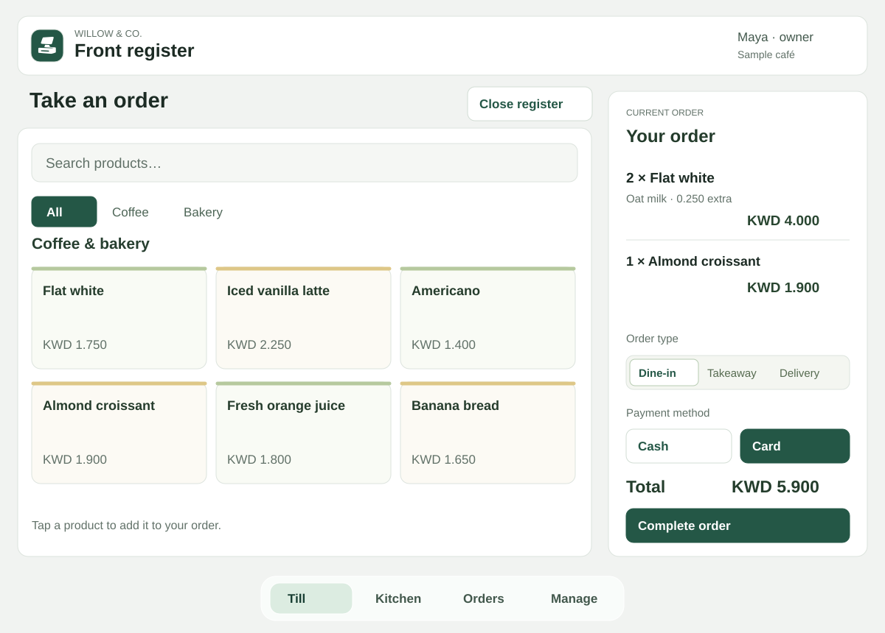
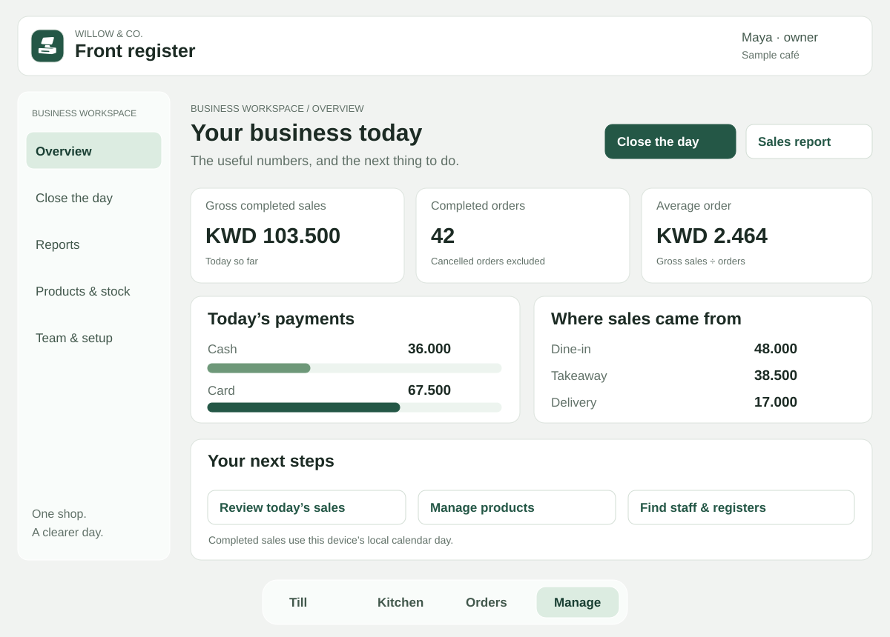
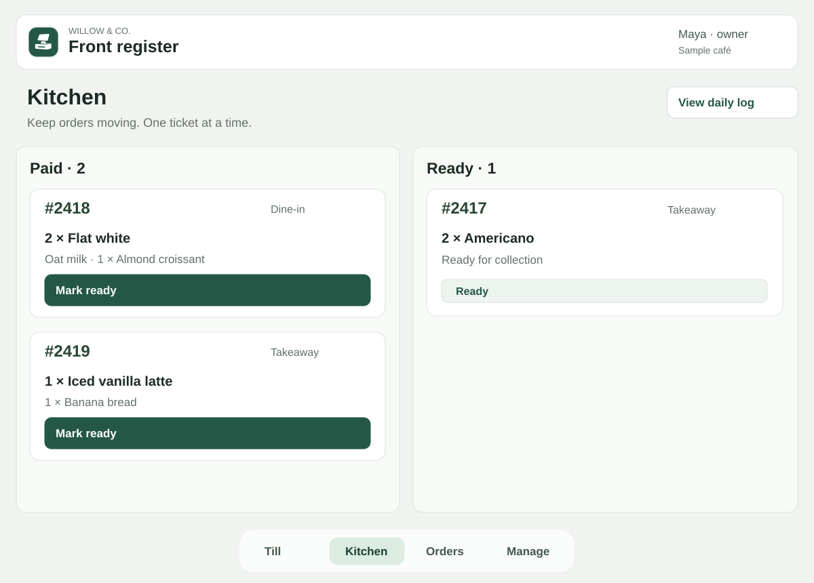
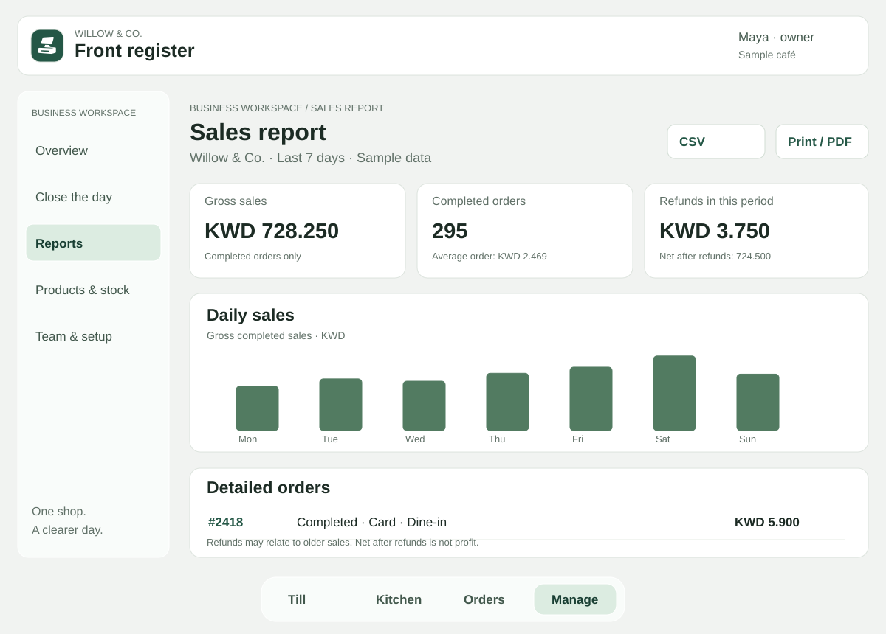
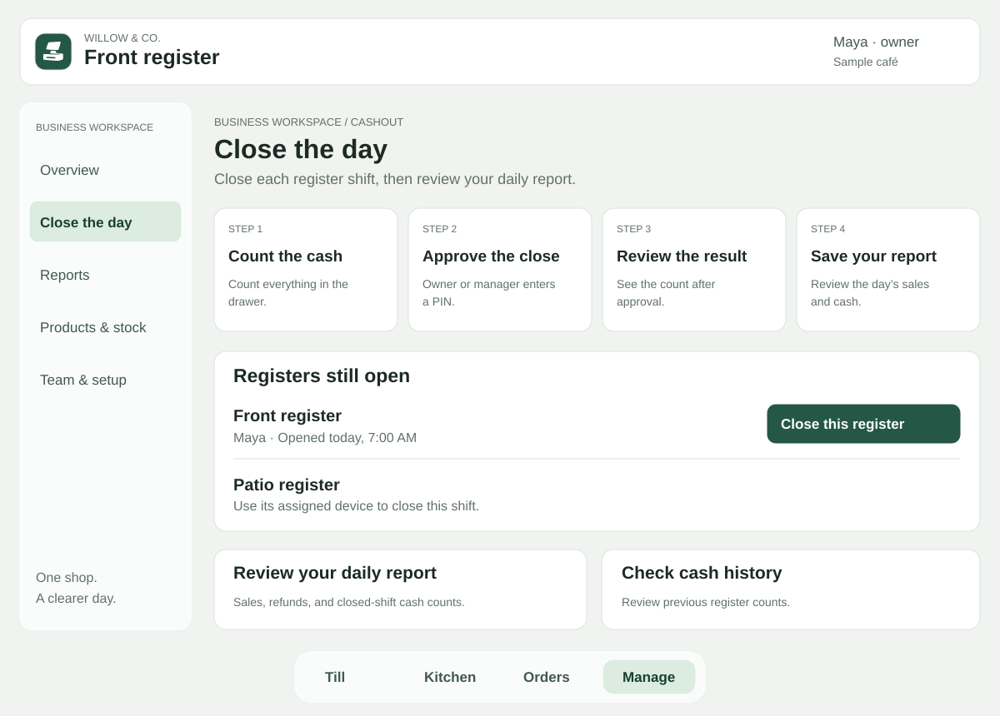

01 / AT THE COUNTER
Take the next order.
Find products, choose extras, and keep the order in view. Record cash or card payments, then pass the ticket to the kitchen.
Small shop. Clear picture.
From the first coffee to the last cash count. Your till, kitchen, and business reports, together in one simple workspace.
For independent cafés and small restaurants.
Works in the
browser on the phone or tablet you already have.

Easy at the counterClear products. Fewer taps.
Ready for the kitchenTickets your team can follow.
Useful after closeReports you can understand.
The workspace
A focused screen for each part of your day. The essentials stay easy to find, with more detail when you need it.

Find products, choose extras, and keep the order in view. Record cash or card payments, then pass the ticket to the kitchen.

See incoming tickets and move them along as food or drinks are ready. Use a quick flow or a preparation stage that suits your shop.

Choose a date range and review sales trends, payment methods, best-selling products, and individual orders. Download a CSV or save the report as a PDF.

Find your open registers in one place. Count the drawer, get owner or manager approval, then review the result and the daily report.
Product illustrations use fictional sample data. Exact options depend on your shop’s setup.
Your kind of shop
Independent food businesses in Sri Lanka and the GCC. One location, familiar devices, and no IT team needed at the counter.
A clear menu, drink extras, and an optional kitchen screen for your morning rush.
Takeaway, dine-in, or delivery orders, with tickets the team can work from.
Simple product choices, stock records, and a useful view of what sold today.
A familiar welcome
Receipts and menus support English, Sinhala, Tamil, and Arabic. Choose the languages your shop uses during setup. The staff workspace uses plain English.
Pilot pricing
Indicative prices while we pilot. We agree on your setup, monthly service, and one-time setup fee before you commit. This website does not take payment.
A simple counter
For a small counter that needs the essentials.
$9/ month, indicative
A team and a kitchen
For a counter, a kitchen, and staff working shifts.
$29/ month, indicative
Help with the details
For a menu to move across or extra setup support.
Let’s talkquoted for your shop
Plans describe proposed service packages, not automated subscriptions. Feature availability is confirmed during setup.
Good to know
A focused tool for running one shop, with clear boundaries around hardware and payments.
Kade records whether an order was paid by cash or card. You take the payment separately using your usual cash drawer or card terminal.
Kade runs in a browser on a phone, tablet, or computer. There is no required branded till or server in the back room. A second screen is useful if you want a kitchen display.
Yes, for an already open, prepared till. Turn on Offline protection in Business profile while online, open the register and wait for Ready. Known products, custom choices and receipts keep working on that device during an interruption. Saved sales sync automatically when internet returns, updating reports and Kitchen. Keep the till open until syncing finishes. First opening the app, signing in and closing a register need internet; a power cut also needs a device with battery power. Card payments depend on your card terminal.
Use your browser’s print dialog to print or save as a PDF. Printer support depends on your device and browser; dedicated thermal-printer integration is not included.
Where enabled, Ask helps managers understand business data and prepare drafts for review. It does not change prices, send supplier orders, or close registers for you.
No. Creating an account does not take a payment. Kade is being piloted with guided setup; service details and fees are agreed separately.
Start with the essentials
Create your owner account, then work through your shop’s setup. Begin with the menu and register; add the kitchen screen if your team needs it.
No card details at signup.
Pilot service and setup fees
agreed separately.